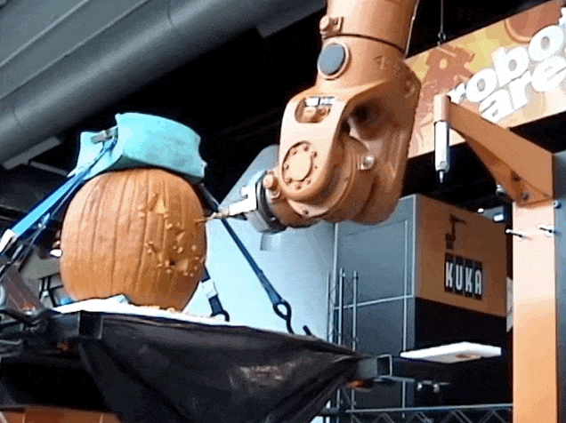
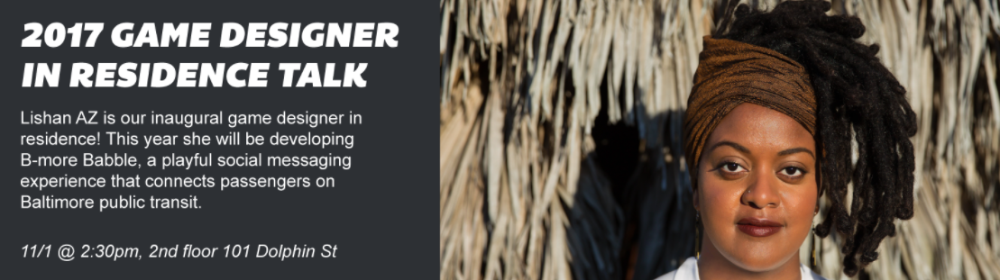

Robotic Arts Intro Fall 2017 (IA277.01)
- Instructor: Lucas Haroldsen (lharoldsen@mica.edu)
- Class Site: yasunaga.work/raif17
- syllabus: syllabus.pdf
- Resources: links.html
10/31: Motor 1 [spooky movement]
Happy Halloween!

youtube
Shop Tours!
Today, we are going to start off with learning about our new Design Studios!
We will take a look at tools that are available to you on 4th floor and the 1st floor.
Here is the hours.
Project1 Presentation part2
We have 6 projects to be presented today from Project 1 assignment. We will be spending part of the day looking and talking about your works!
Artist Talk: Lishan AZ

Our game designer in residense Lishan AZ is giving a artist talk tomorrow at 2:30pm!
Wednesday November 1st
2:30-3:30pm at Dolphin 2F
Motor 1
Today we will take a little break from Arduino and take a closer look into motors.
- Introduction to motors and different kinds of motors
- Homopolar motors
- Charactoristics of motors
- Voltage
- Amprage
- RPM
- Using benchtop powersupply
- testing your motor
- transfering energy
Kinetics resources
Here are some basic mechanisms that can be used to convert rotational movement to lenior and extended movements.
-
Here are some useful things for converting
- Online gear generator (you can hand cut from prints)
- Article on Basic Mechanics
- Mechanism examples
Another Housefly - Arthur Ganson
Katie Wynne
HOMEWORK
Watch Documentary:
All Watched Over by Machines of Loving Grace
Part 2. The Use and Abuse of Vegetational Concepts
Be prepared to share your views and relationships to the ideas that are adressed in the film.
Finish your mechanism study
- Upload 2 photos or 1 short video of your study under folder named 11/7